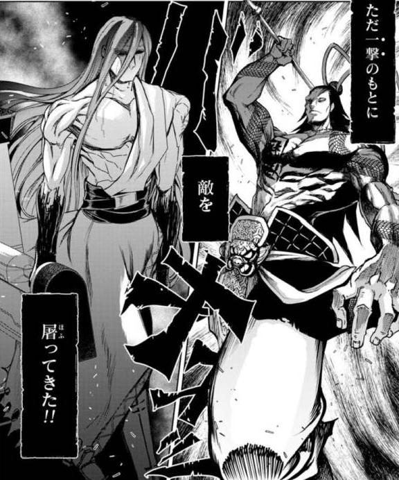
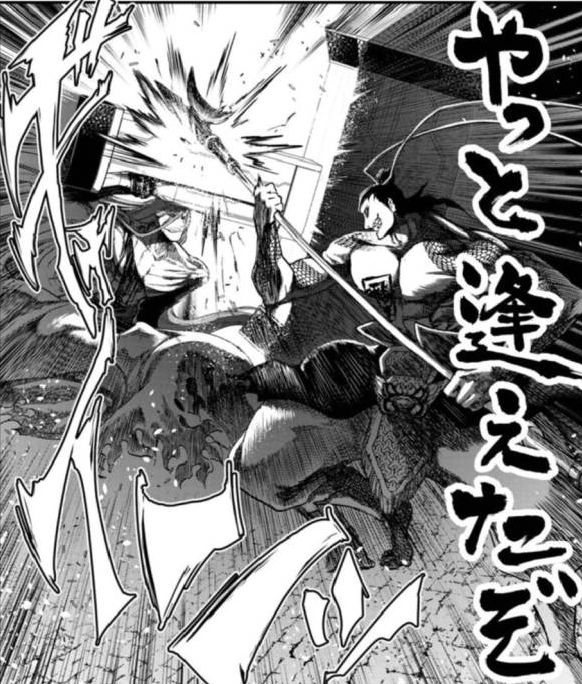
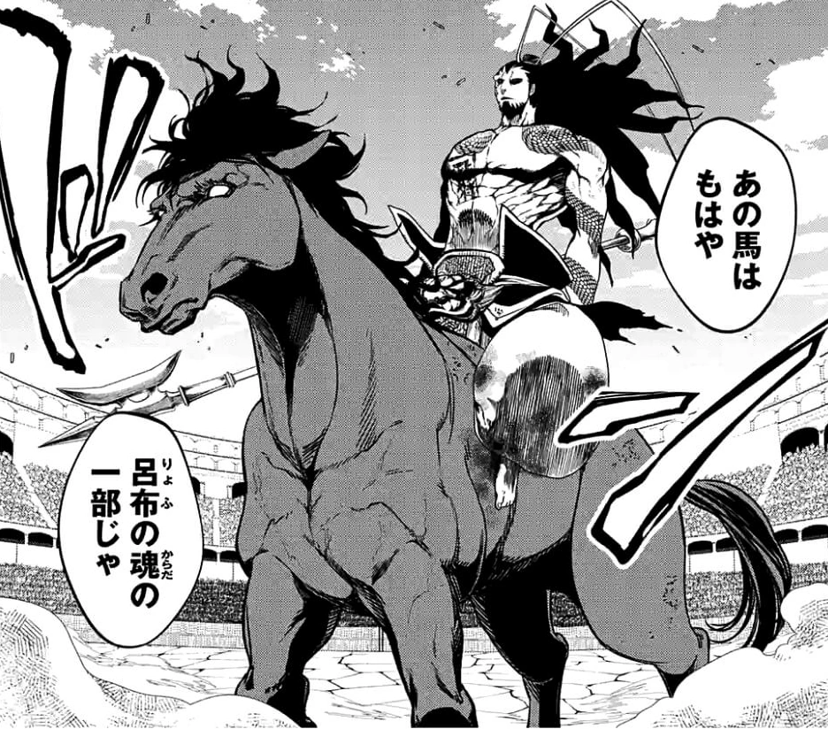
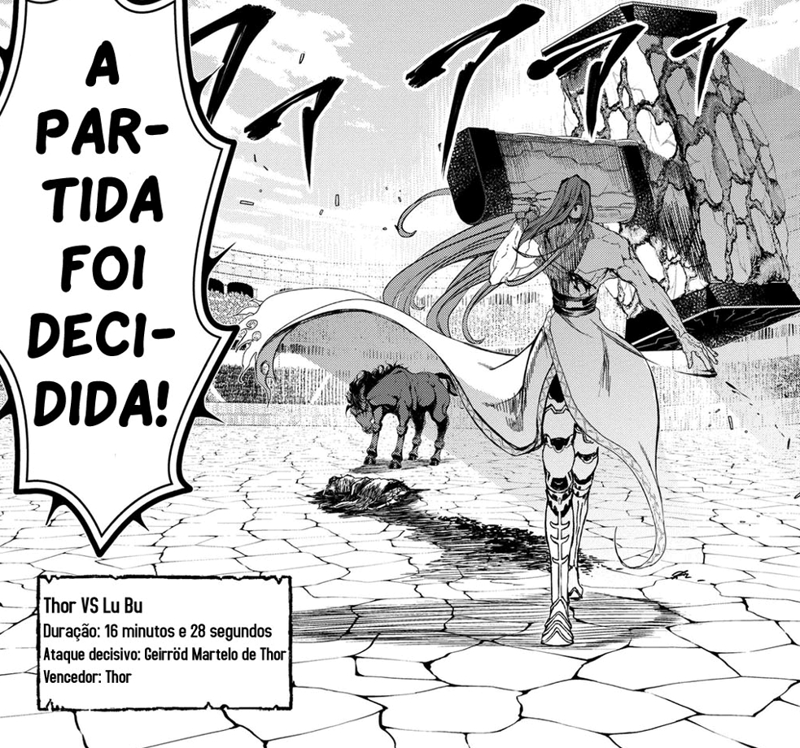
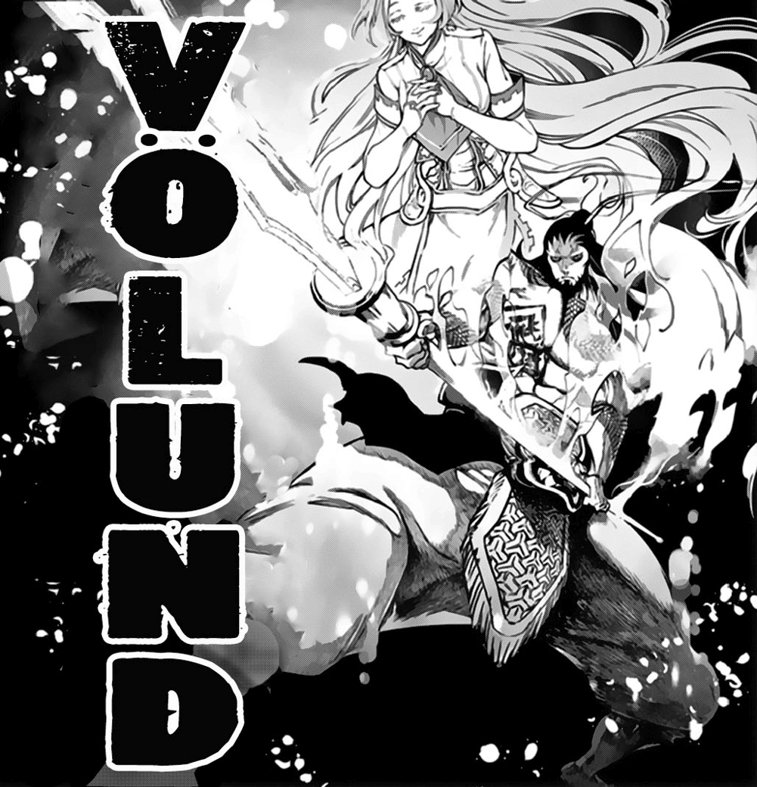

Lu Bu, o General Voador
Nome: Lu Bu Feng Xian
Características
Idade 38 anos Sexo Masculino Classe Humano, guerreiro do lado da humanidade Altura 2 metros Objetivos Encontrar algum oponente forte a alturaBatalhas
História
Quando Lǚ Bù era apenas uma criança, ele percebeu que havia superado todos os que viviam em sua tribo, então ele decidiu deixá-lo e partir em uma jornada para se tornar o guerreiro mais forte. Em algum momento de sua infância, ele testemunhou como um raio quebrou uma enorme árvore que encheu de espanto o jovem Lǚ Bù que acreditava que alguém muito poderoso vivia no céu. Lǚ Bù passou a viajar pelo vasto continente da Eurásia desafiando qualquer coisa que estivesse em seu caminho. Nos anos seguintes, as façanhas de Lǚ Bù se tornariam conhecidas em toda a China, o que fez com que muitas pessoas decidissem se juntar a ele em sua jornada. Depois de trinta anos de luta, Lǚ Bù caiu em desespero quando percebeu que havia se tornado o mais forte e não havia ninguém que pudesse rivalizar com ele, então ele decidiu dedicar seu tempo a um árduo treinamento onde conseguiria superar seus limites e os de sua arma. Depois de uma batalha feroz contra Cáo Cāo, Lǚ Bù deixou-o ser capturado junto com seu exército, mais tarde Cáo Cāo ordenaria a execução imediata de Lǚ Bù e seus homens, mas a única reação do guerreiro a este evento foi gritar de tédio, além de pedir a seus carrascos que se apressassem em executá-lo, porque ele não tinha mais nenhuma motivação para viver e continuar lutando.
Ragnarök: Primeira Rodada
Lu Bu chegou à arena de Valhalla completamente envolto em ataduras enquanto montava seu cavalo "Red Hare" e foi apresentado por Heimdall como o primeiro guerreiro a lutar pela humanidade enfrentando o deus Thor. Uma vez que ele entra na arena de combate, Lǚ Bù quebraria as ataduras que o envolviam para sair do monte Red Hare, uma vez que o combate começasse, Lǚ Bù e Thor momentaneamente abaixariam suas armas e começariam a caminhar um em direção ao outro, uma vez que eles estão perto o suficiente Lǚ Bù é o primeiro a dar o primeiro golpe, mas Thor bloquearia o ataque com facilidade e ele empurrava Lǚ Bù para trás com um empurrão de seu martelo. Então o deus continuaria a atacar, mas para sua surpresa seu golpe também seria bloqueado. Quando eles colidem suas armas novamente um com o outro, ambos sorriem porque o oponente diante deles foi o primeiro em muito tempo que foi capaz de sobreviver ao seu primeiro ataque. Thor então assume sua postura de batalha e começa a gerar eletricidade de suas mãos para o Mjölnir. Uma vez que o martelo está completamente imbuído de eletricidade, o deus passa a realizar um poderoso ataque que causa um grande impacto, mas para sua surpresa Lǚ Bù consegue escapar ileso. Vendo o quão poderoso Thor é, o guerreiro sorri de felicidade e começa a feri-lo cortando seu peito.
Lu Bu e Thor colidem com armas
Tanto o humano quanto o deus estavam muito felizes por estarem lutando contra alguém realmente forte, então, sem perder mais tempo, eles retomam seu combate. Após uma troca de ataques, a arma de Lǚ Bù começa a brilhar porque sua habilidade especial havia sido ativada, conseguindo destruir um dos Járngreipr de Thor, fazendo com que este liberasse momentaneamente seu Mjölnir, vendo isso os deuses ficam surpresos que um humano foi capaz de destruir um objeto divino. Por sua vez, Lǚ Bù continua a atacar Thor e consegue cortar seu ombro, mas naquele momento tanto ele quanto Thor percebem que algo estava acontecendo com Mjölnir. Quando ele se vira para ver o que estava acontecendo, o deus percebe que o martelo está "acordando", então ele tira a outra luva Járngreipr e decide pegar o Mjölnir com as próprias mãos. Uma vez que Thor levanta sua arma novamente, ele faz um pedido a Lǚ Bù, que era para que ele não morresse naquele momento, ouvindo isso Lǚ Bù fica excitado, mas antes que ele pudesse fazer qualquer coisa, Thor joga seu martelo nele, apesar de se esquivar, sofre leves queimaduras devido ao calor produzido pela eletricidade em torno do Mjölnir, Lǚ Bù então corre e começa a correr em direção a Thor, mas antes que ele pudesse tentar qualquer coisa, ele percebe que o martelo estava retornando ao deus, então ele mais uma vez tem que se esquivar do Mjölnir; tendo novamente puxado o martelo, Lǚ Bù encurta distância suficiente para ser capaz de atacar Thor, mas este último o receberia com sua técnica Geirröðr Martelo de Thor. Embora Lǚ Bù tenha sido capaz de bloqueá-lo, ele acabou com os ossos de seus pés quebrados devido ao impacto do golpe.
Lu Bu se prepara para o último golpe
Lu Bu cai de joelhos sendo incapaz de se mover, mas assim que Thor estava prestes a acabar com ele, Red Hare escapa do estábulo e entra na arena de Valhalla, vendo o exército deste Lǚ Bù e o público da humanidade começarem a encorajar o guerreiro a continuar lutando. Usando seu Sky Piercer Lǚ Bù consegue se levantar e montar na parte de trás de seu cavalo, antes que este Thor só possa rir de felicidade ao ver que seu oponente ainda não se rendeu, uma vez que Lü Bu está no topo da Lebre Vermelha começa a cavalgar rapidamente em direção a Thor que vendo que seu rival iria atacá-lo com todo o seu poder decidiu responder da mesma maneira. Ambos atacam um ao outro com suas melhores técnicas, sendo o Martelo de Geirröðr Thor e o Devorador de Céu, respectivamente. O impacto dessas técnicas produz um grande flash que cega brevemente os espectadores, mas o vencedor deste confronto acaba sendo Thor cujo ataque foi tão poderoso que ele acaba arrancando um braço e uma perna de Lǚ Bù, além de destruir Sky Piercer; a arma em que ele havia sido transformado.
Lu Bu está feliz
Vendo isso, Lǚ Bù começa a arrancar com a boca o braço quebrado que ainda estava pendurado nele. Olhando para o céu, ele começa a sorrir, depois cavalga novamente contra seu oponente. Enquanto se dirigia a Thor, Lǚ Bù manteve um sorriso; experimentando o sentimento de verdadeira felicidade por ter encontrado um rival digno, vendo este Thor dá um pequeno sorriso e com seu Mjölnir prossegue para acabar com a vida de Lǚ Bù, decapitando-o com um único golpe, marcando com isso a primeira vitória de Ragnarök para os deuses. Após a vitória de Thor, todos os soldados do exercito de Lu Bu vão para a arena enfrentar thor para irem com seu general ao outro lado.
Arma Divina
"Perfuradora de Céus" era a arma favorita de Lǚ Bù, um Fang Tian Hua Ji que foi o resultado do Völundr de Lǚ Bù forjado com a Valkyrja Randgríðr. Graças ao poder de Randgríðr Piercer do Céu tem a habilidade especial de destruir qualquer tipo de defesa que exista, como visto quando Lǚ Bù foi capaz de destruir uma das luvas Járngreipr.
Habilidades
Lǚ Bù era considerado o maior herói da China e o guerreiro mais forte, sendo admirado e respeitado em todos os reinos. Figuras lendárias da China, como Guān Yǔ e Dong Zhuo, reconheceram as capacidades de Lǚ Bù.
Força extrema: Desde tenra idade, Lǚ Bù possuía uma força incrível, sendo capaz de matar um enorme lobo sem muito esforço. À medida que crescia em sua jornada como guerreiro, ele conseguia acabar com exércitos inteiros, além de fazer seu melhor ataque, ele era capaz de dispersar as nuvens do céu. Durante seu combate em Ragnarök, ele provou que sua força poderia rivalizar com a de Thor, bloqueando vários dos ataques do deus e até mesmo conseguindo empurrá-lo de volta algumas vezes.
Resistência sobre-humana: Lǚ Bù possuía grande resistência que demonstraria quando bloqueasse o Martelo de Thor sem tomar qualquer dano. Ele foi até capaz de sobreviver a um Martelo de Geirröðr Thor e ficar de pé mesmo quando suas pernas foram quebradas pelo impacto da técnica e não mostrou nenhum sinal de dor quando ele perdeu os dois braços depois de receber um segundo Martelo de Geirröðr Thor com todo o poder de Thor.
Agilidade e reflexos sobre-humanos: Lǚ Bù foi capaz de acompanhar os movimentos de Thor, bem como desviar do Mjölnir com facilidade.
Técnicas
Devoradora de Céus
A técnica especial mais forte de Lǚ Bù consiste em agarrar a extremidade de sua alabarda com uma mão e estendê-la para trás e, em seguida, fazer um corte vertical para baixo com força total. O nome desta técnica vem do fato de que Lǚ Bù conseguiu separar as nuvens do céu ao meio quando a executou pela primeira vez.
Figuras Históricas na Plateia
ZHANG FEI

Foi um irmão de juramento de Liu Bei e Guan Yu. É visto completamente bêbado na arquibancada.
GUAN YU

Guan Yu foi um dos maiores guerreiros e generais da China, a ponto de ser considerado uma divindade, o deus das artes marciais. Concordou com Liu Bei de que ele próprio era o melhor guerreiro da época, mas somente nos quesitos de estratégia, e para enfrentar Thor era preciso o maior em força bruta, que era Lu Bu.
LIU BEI

Liu Bei foi um senhor da guerra que tornou-se o principal adversário de Lu Bu nos campos de batalha. É visto na arquibancada questionando se Lu Bu era realmente a melhor escolha para representar os humanos e não o seu irmão de juramente, Guan Yu.
CHEN GONG

Chen Gong foi o conselheiro e estrategista de Lu Bu. Ele é visto na torcida chorando de emoção por ter o prazer de ver Lu Bu lutar mais uma vez.
Curiosidades
Esboços e Comics do Lu Bu

Primeiro esboço feito de Lu Bu

Segundo esboço feito de Lu Bu

Terceiro esboço feito de Lu Bu
Natal com Randgriz e Lu Bu
Randgriz, Lu Bu, Adão e Sasaki 1
Randgriz, Lu Bu, Adão e Sasaki 2
Randgriz fazendo cócegas-1
Randgriz fazendo cócegas-2
Randgriz fazendo cócegas-3
Randgriz fazendo cócegas-4
Randgriz fazendo cócegas-5

Randgriz com Lu Bu criança 1

Randgriz com Lu Bu criança 2